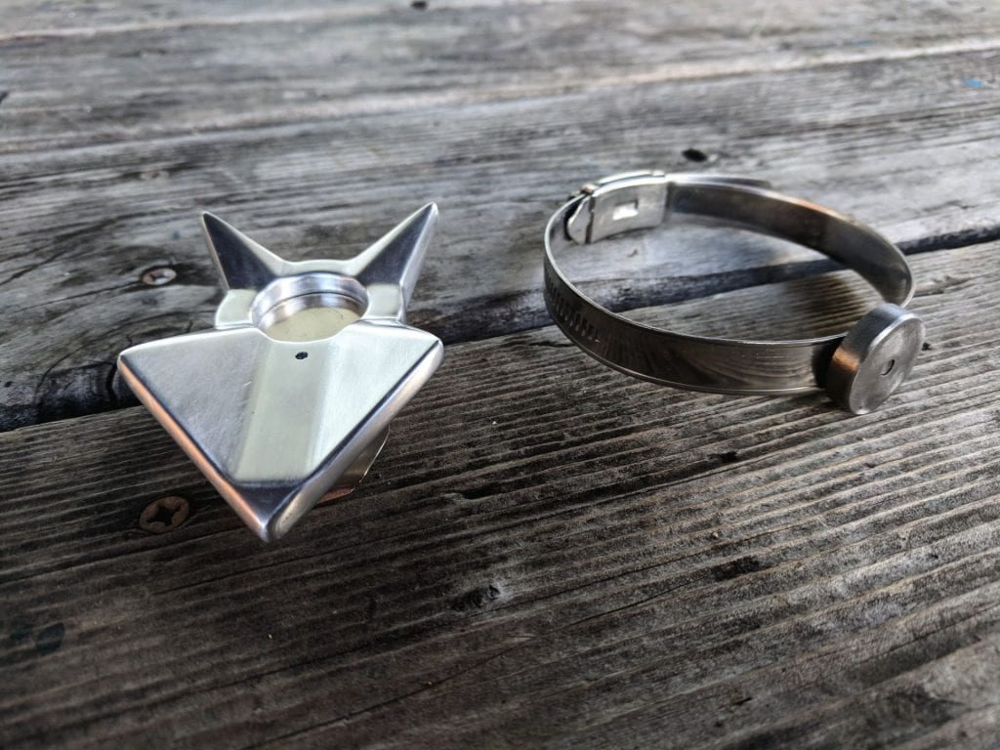
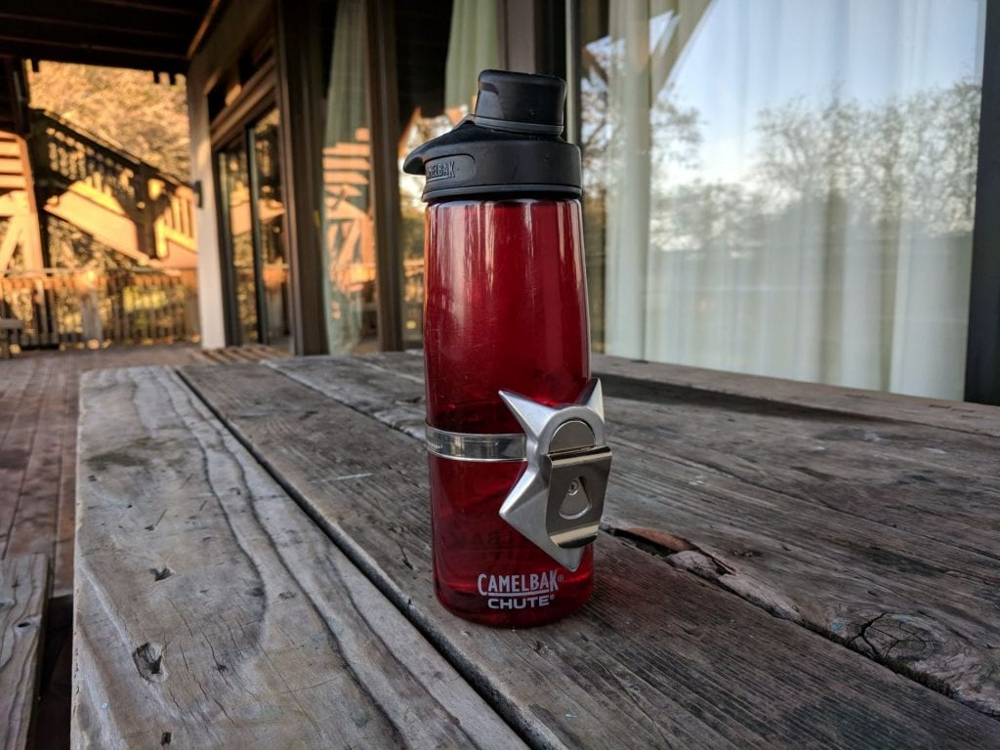
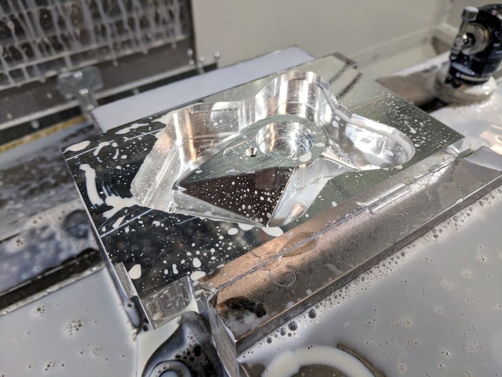
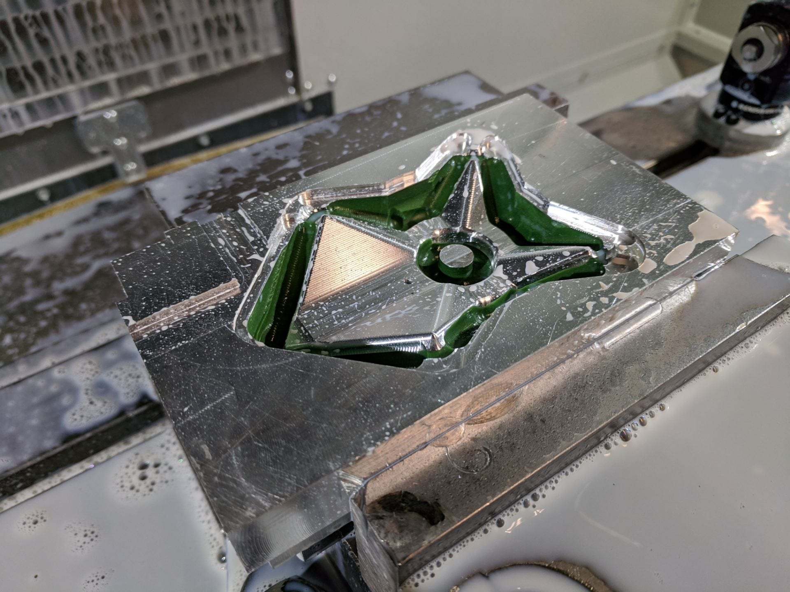

Autumn 2018
Because my backpack lacked a side pocket, I designed a product that would make it easy to access my water bottle. The contouring capabilities of CNC machining enabled an elegant adaptation of the V block in holding round objects. The magnet attaches to the steel cylinder strapped to the bottle, and it can be easily removed by simply twisting. The shape of the Hydromag enables the turning motion to be much easier than pulling straight out. The clip (taken from a tape measure) enables the holder to be placed on a belt or backpack, and the hose clamp adjusts to various sizes of water bottles. In prototyping the Hydromag, I didn’t acheive an ideal holding strength, but I felt that ordering stronger magnets would solve the issue. Based on magnetic strength calculations, the new one could have held a water bottle, but I neglected to account for the smaller area of the steel cylinder compared to estimates based on larger plates. In its current form, the strength of the attraction of the steel to the magnet is not enough to support a full water bottle. The geometry of the aluminum piece worked out really well in demonstrating the motion of detaching the bottle, and I really want to get a handle on the magnetic holding for future iterations of the Hydromag.

Hydromag with accompanying hose clamp and steel cylinder
Designing the CAM with the part flip in mind was the most challenging task. I had to create additional coordinate systems in Solidworks in order to account for facing operations and the two sides that needed to be machined. I faced 4 sides of my stock and machined a datum corner, but the first cut on the back side ended up shifted about 0.030″ in the x-direction from where I expected it to be in the CAD. Because I didn’t face the remaining two sides, I couldn’t get accurate measurements of the error, and I couldn’t confidently make changes to account for it. The cut on the part flip was offset from the back side and resulted in a fairly loose fit for the steel cylinder. This had a negative effect on the holding ability, but fortunately, the remaining cosmetic errors could be ground and filed away. Otherwise, using wax workholding was much more straightforward than I thought it would be. The main lesson from this project was the importance of ensuring reliable reference geometries from the start.

Attached to the water bottle

Back side before using wax

Front side after using wax